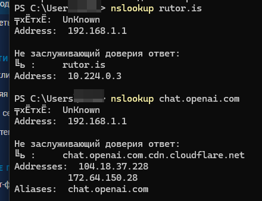
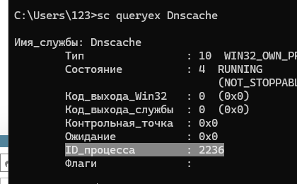
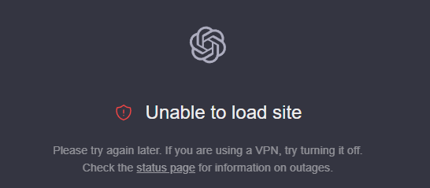

Здравствуйте! Прошу помогите мне добавить в antizapret chatgpt. В include-hosts-custom.txt добавил домен chat.openai.com, но кроме вот такой страницы я больше ничего сделать не могу. Кнопка входа и регистрации не на что не реагируют
{kind=link}
Для того, чтобы протий login нужно внести домен intercomcdn.com, для стилей и прочего нужно внести еще 2 домена - oaistatic.com и oaiusercontent.com. После этого все вроде бы должно работать корректно.
Большое Вам спасибо! Добрый Вы человек
Уважаемые, есть ли у кого-то полный список доменов, чтобы добавить в include-hosts-custom, чтобы работал chatgpt, copilot и gemini?
detect redir_hostlist: chat.openai.com → 172.64.150.28 13
detect redir_hostlist: cdn.oaistatic.com → 104.18.41.158 254
detect redir_hostlist: copilot.microsoft.com → 2.23.209.151 2
detect redir_hostlist: gemini.google.com → 142.251.36.14 73
спасибо за ответ, а можно с пояснениями? 
Не совсем понял что за число после ip
Это просто логи
Вам нужен только домены
Пример: chat.openai.com
Это число ttl
у меня добавлено все, что я смог найти, но не работает.

Сбросьте dns cache
ipconfig /flushdns
sc queryex Dnscache
там

потом taskkill /f /pid ВАШ_АЙДИ_ПРОЦЕССА /t
и ещё раз ipconfig /flushdns
Все проделал, но безрезультатно.
WebRTC/QUIC в браузере отключить…
я так понимаю это делается только с помощью расширения? я отключил, безрезультатно, но тест на утечки показал что их и так не было,
Так работает?
apt install socat -y
/root/antizapret/config/include-hosts-custom.txt
openai.com
cloudflare.net
chatgpt.com
oaistatic.com
oaiusercontent.com
intercomcdn.com
intercom.io
azureedge.net
launchdarkly.com
fastly.net
arkoselabs.com
cloudfront.net
clear && /root/antizapret/doall.sh
sleep 15
echo "cache.clear()" | socat - /run/knot-resolver/control/1
На клиенте так же dns cache сбросить.
Спасибо, но нет, заменил свой список на ваш, но ничего…
intercom.io у меня этого адреса не было, надеялся что теперь то все получится, но увы.
так домены то теперь резолвит куда надо (10.x.x.x) или все еще нет? Если да, то открывайте F12-networking в браузере и сами смотрите какие домены используются
Неа, я бы спросил…
Может сюда добавить что-то include-hosts-dist.txt? Что это за список вообще?
А что конкретно у вас не работает?
ChatGPT хочу получать без VPN) А в идеале еще и другие нейросетки - Gemini и Copilot, т.к. Copilot в Винде и Офисе, то это было бы очень удобно использовать, но постоянно вкл. и выкл. VPN задолбало уже, а умений настроить, например, VPN так, чтобы через него выборочно подключаться, нет.
У вас есть аккаунт?
Передайте мне данные для входа, так будет проще.
И опишите что мне следует проверить, для подтверждения работоспособности.
А аккаунт то причем? Есть, но я не могу заставить открываться сайт без впн, хотел реализовать с помощью антизапрета.
Если вы до сих пор работаете с ChatGPT, помогите выяснить работает ли ChatGPT при использовании этого списка
https://ntc.party/t/7216/17
Проходит ли авторизация, доступны ли все функции?
Здравствуйте! В include-hosts-custom.txt для доступа в ChatGPT я только добавил вот эти 4 домена
chat.openai.com
intercomcdn.com
oaistatic.com
oaiusercontent.com
И после этого у вас все прекрасно работает я полагаю?
Да, все функции работают
Спасибо
Вопрос исчерпан.
Ну для кого как… для меня вот не исчерпан, потому что у меня не работает и я продолжаю искать пути решения.
Я сейчас зашел в режиме инкогнит в ChatGPT и я спокойно прошел авторизацию
Странно почему у Вас не получается
Я вот тоже пытаюсь разобраться, ладно бы айпишник забанили, но у меня впн работает на том же vps где и антизапрет и через впн все прекрасно, как только пытаюсь антизапрет - ни одна нейросетка не фурычит.
Вы когда заходите в ChatGPT у вас такая картина? Или как на втором скрине?
{kind=link}

Как на втором.
А снизу какой ip у вас показывает? Если VPS, то скорее всего когда вы брали сервер, то вам попался свежий ip и ChatGPT думает что вы из РФ
Мой IP родной, не VPS.
В теме с контейнером у вас были сложности
После этого случая контейнер не переустанавливали?
Переустанавливал, на днях была оказия у многих, я с нуля все поставил, поэтому файлы там все в порядке, ну кроме include-hosts-custom.
Все патчи тоже применены?
Да, ну все же работает, все заблокированные сайты открываются, кроме нейронок.
Это тестовый сервер на 2ч до 23:37 по мск. Попробуйте проверьте работу ChatGPT через него
antizapret-client-tcp.ovpn (5,2 КБ)
antizapret-client-udp.ovpn (5,1 КБ)
Я не успел)
Кстати, насчет этого, правильно же делать так?
LANG=C.UTF-8 /root/antizapret/doall.sh
если сделать без указания кодировки, то blocked domains - 222264 шт., а с кодировкой - 223737
root@antizapret-vpn:~# locale | grep "LANG="
По каким то причинам перестал работать ChatGPT. Вот такие использую домены
chat.openai.com
intercomcdn.com
oaistatic.com
oaiusercontent.com
{kind=link}
добавь
Благодарю) Все заработало
В общем, если резюмировать всю эту инфу, то
ChatGPT у меня прекрасно работал в браузере по ссылке https://chatgpt.com если внести правки в
/root/antizapret/config/include-hosts-custom.txt
openai.com
intercomcdn.com
oaistatic.com
oaiusercontent.com
chatgpt.com
как тут и рекомендовали, но
дополнительно стояла задача запустить Copilot на компе и смартфонах в домашней сети
спросил у самого ChatGPT, к каким доменам идет обращение, исчерпывающий список.
Он мне ответил, что это
Основные домены:
copilot.microsoft.com, *.copilot.microsoft.com
*.bing.com, *.bingapis.com
challenges.cloudflare.com
Сервисы Microsoft 365:
*.cloud.microsoft
*.office.com
не заработало.
Тогда я погуглил ссылку
по итогу просто внёс на основании этих двух ответов
bing.com
bing.net
microsoft.com
msn.com
live.com
cloudflare.com
microsoftonline.com
bingapis.com
cloud.microsoft
office.com
Можно было бы поиграться с getzones.awk чтобы добавить где надо чисто домены третьего уровня, но мне не критично.
Так заработало.
Заработало на смартфоне в приложении и в Edge,
на пк Win 11 23H2 по ссылке https://copilot.microsoft.com/, – но по кнопке на панели и по кнопке в Edge так и не заработало – “К сожалению, эта служба недоступна в вашем регионе.”. Регион на США в Параметрах Время и языка сменил, перезагружал, всё без толку.
Погуглил, но внятной инфы, кроме как завернуть всё в VPN, не нашёл, но тут-то антизапрет.
Может будут у кого идеи на предмет работы кнопок?
у меня вообще ничего так и не заработало из этого листа, думаю что-то как-то связано с днс, у кого-то все ок, а вот у вас и у меня нет, так что я все нейронки заставил работать пропустив их через днс-сервер который тут на форуме подсказали, копайлот работает и в браузере и по кнопке, гемини почему то перестал, но работал раньше, чатгпт работает везде.
{kind=link}
Добрый день,
у меня copilot как будто не получает токен, хотя аутентификация проходит, первая страничка грузится и потом attemping to reconnect…
все из этого чата добавлено в include
{kind=link}
посмотрел на телефоне, 13.107.246.44 одна из подсетей azure, но не заворачивается в туннель
что это может быть за сервис?
это оказался *microsoftapp.net
после добавления теперь проблема с вебсокетам
{kind=link}
вообщем ошибка pre-flight response от подмены заголовков прокси
на саппорте куча тикетов от китайцев которые сидят через випиэны что у них не работает
надо как то хэдер чинить
не совсем понятно что за заголовки, у меня через прокси в браузере и через аз работает copilot, правда я без аккаунта. microsoftapp.net у себя в логах не вижу.
я использую селф-хостед антизапрет отсюда
если влючить вайргард напрямую до этой машины - все работает
сниффером посмотрел-весь траффик заворачивается
вот про префлайт
хотя может я не прав и префлайт ни на что не влият
Сensor tracker плагин не заработал (ну и не должно наверно если заголовки переписываются дальше?)
Сomms dns не наш вариант. Сорян, если ошибаюсь где то в технике, я не силен в http
та на он нужен когда есть lmsys arena там куча моделей бесплатно и без регесрации тока на самые попсовые rate limit стоит